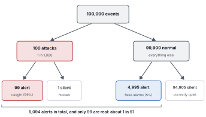
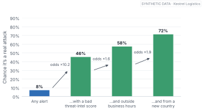
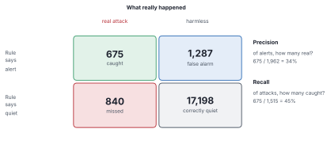
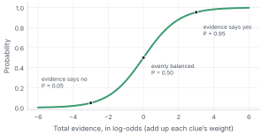
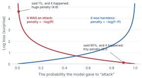
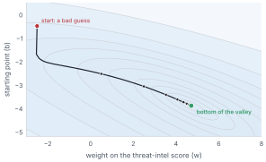
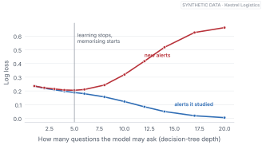

Let me guess what went through your head when you saw the word “probability”.
“Coins and dice. I did this at school, didn’t enjoy it much, and I’m fairly sure I don’t need it to build AI systems.”
That’s a reasonable thought. It’s also the most expensive mistake people make in this field.
In the last chapter, a machine learned exactly what we asked and still ended up useless, because we asked for yes-or-no answers. The fix was to ask for a chance instead. This chapter does two things. First, it makes sure you can read a chance without being fooled, including the one trap that catches doctors, judges and security teams alike. Then it builds, in about twenty lines of code, a model that learns chances from examples.
There’s no heavy maths here. There are a few ideas that, once they click, you’ll use for the rest of your career.
By the end of this chapter
Say what “a 70% chance” means in a way you could check.
Spot the base-rate trap before it costs you, and update a probability by multiplying odds.
Read precision and recall, and explain why accuracy can lie.
Build a model that adds up evidence into a probability, score it with log loss, and train it by rolling downhill.
Recognise overfitting and leakage, the two ways a model fools you during training.
2.1 What “70%” means
Your weather app says there’s a 70% chance of rain tomorrow.
Tomorrow comes. It doesn’t rain.
Was the forecast wrong?
Not necessarily. One day can’t tell you. What can tell you is the forecaster’s track record. Collect every day they said “70%”. If it rained on about 70 of every 100 of those days, the forecaster is doing their job, and a dry day is just one of the 30.
So here’s the idea to hold on to: a probability is a claim about how often something happens among cases like this one.
That definition is useful because it’s checkable. When a model tells you an alert is 70% likely to be an attack, it’s making the same kind of promise as the weather app, and we can hold it to the same standard.
2.2 The two most important words: “among what?”
At Kestrel Logistics, about 7.6% of all alerts turn out to be real attacks. That’s the probability of an attack among all alerts. Among alerts with a threat-intel score of 0.7 or more, the share is much higher. Same question, a different answer depending on which group you’re asking about.
Statisticians write the second kind with a vertical bar, read as “given”: P(attack | bad score) is the chance of an attack given a bad score. And here’s where people get tangled. P(attack | bad score) and P(bad score | attack) look like mirror images. They’re not.
About 27% of attacks come with a bad score. That doesn’t make a bad-score alert 27% likely to be an attack. “How often do attacks look like this?” and “how often is something that looks like this an attack?” are different questions. Mixing them up has a name in courtrooms, the prosecutor’s fallacy, and it has put innocent people in prison. In a SOC it just ruins your week.
2.3 The trap
Here’s a puzzle. Try it honestly before reading on.
A new detector catches 99% of real attacks. It also raises a false alarm on 5% of normal activity. Real attacks are rare: one event in every thousand. The detector just fired. What’s the chance you’re looking at a real attack?
Most people say something like 95%.
The real answer is about 2%.
If that feels wrong, you’re in excellent company. In a well-known 1978 study, doctors and students at Harvard Medical School were given the same puzzle about a medical test, and the most common answer was 95% (Casscells et al. 1978). The way out isn’t a formula. It’s counting.

Figure 2.1: The same puzzle, counted out. Of 100,000 events, 100 are attacks and the detector catches 99 of them. But 5% of the 99,900 normal events also set it off: 4,995 false alarms. When the alarm sounds, you’re holding one of 5,094 alerts, and only 99 of them are real.
Figure fig-base-rate-tree is the whole trick. The 5% false-alarm rate sounds small, but it’s 5% of a huge number. The 99% hit rate sounds large, but it’s 99% of a tiny one. The psychologist Gerd Gigerenzer showed that people who reason with counts like these get such puzzles right far more often (Gigerenzer and Hoffrage 1995). If a probability ever surprises you, turn it into counts of events. The surprise usually vanishes.
The chance of something before you see any evidence, the 1 in 1,000, is called the base rate. Ignoring it is the base-rate fallacy, and it’s why a “95% accurate” fraud model can still bury a bank in false alarms.
Rare things stay rare even after the alarm goes off.
2.4 Bayes’ rule, without the fear
So how should a new clue change your mind?
The cleanest way uses odds: “for” compared with “against”. A probability of 20% is odds of 20 to 80, or 0.25. Every clue has a strength: how much more common is it among attacks than among harmless alerts? That ratio is the likelihood ratio. At Kestrel, a threat-intel score of 0.7 or more shows up in 27% of attacks and 2.6% of harmless alerts, so its likelihood ratio is about 10.2.
Then Bayes’ rule, the famous one, fits in a single line:
New odds = old odds × likelihood ratio.

Figure 2.2: Starting from the base rate and multiplying the odds by each clue’s likelihood ratio. Three ordinary clues take an alert from “probably nothing” to “probably an attack”.
An ordinary alert starts at 8%. A bad threat-intel score takes it to 46%. Add “outside business hours” and it’s 58%; add “sign-in from a new country” and it’s 72% (Figure fig-odds-update).
One honest caveat. Multiplying like this assumes each clue tells you something new. Real clues overlap: attackers who use bad infrastructure also tend to work at night. Among alerts with both clues, the real attack rate is 69%, not the 58% our multiplication predicted. That gap is why, in practice, we let a model learn how much each clue is worth. We’ll build one in a moment.
2.5 Why accuracy lies
First, how do we score a yes-or-no rule? Take raise an alert whenever the threat-intel score is 0.5 or more, and sort every alert into four boxes.

Figure 2.3: Every one of the 20,000 alerts, sorted by what the rule said and what really happened. Precision and recall each ignore one of the two columns, and that’s what makes them honest about rare events.
Precision answers: when the rule raises an alert, how often is it real? Here it’s 34%. Recall answers: of all the real attacks, how many did the rule catch? Here it’s 45%. And accuracy, the share of all alerts put in the right box (Figure fig-confusion), comes out at 89%. That sounds decent, until you notice that a rule that never raises any alert at all scores 92%. When one outcome is rare, accuracy mostly measures how common the other one is.
2.6 A model that adds up evidence
Now the second half: a machine that learns these probabilities from examples.
Bayes’ rule multiplied odds. Multiplying is awkward and adding is easy, so take the logarithm of the odds, the log-odds, and every multiplication becomes an addition. That gives a very simple machine. Start from a baseline number, add a weight for each clue, and turn the total back into a probability with an S-shaped curve.

Figure 2.4: The S-curve (the logistic, or sigmoid, function) turns total evidence into a probability. Every step to the right multiplies the odds by the same amount, which is why the curve flattens out: once you’re very sure, more evidence changes the probability only a little.
That’s the whole model (Figure fig-sigmoid). It’s called logistic regression, and it’s been used for credit scores and medical risk for decades. Underneath, it’s Bayes’ rule on the log-odds scale, with one upgrade: the model learns all the weights together, so it can discount clues that overlap.
The weights are the knobs. To find good ones, we need a way to say what “good” means.
2.7 Scoring a probability
Counting mistakes doesn’t work any more, because the model doesn’t say yes or no. It says 0.07, or 0.63.
Think about how you’d want to be judged as a forecaster. Say 90% and be right, and you should lose almost nothing. Say 1% and be wrong, and you should be embarrassed, badly, because you were confidently wrong. That score exists. It’s called log loss, and it measures surprise: the penalty is minus the logarithm of the probability you gave to what actually happened.

Figure 2.5: Log loss for a single alert. If it really was an attack (red), the penalty is small when the model gave “attack” a high probability and explodes as that probability heads towards zero. Harmless alerts (blue) work the same way from the other side.
Saying 90% and being right costs about 0.1. Saying 1% and being wrong costs about 4.6, nearly fifty times more (Figure fig-logloss).
Log loss has a deeper property, and it’s the reason this book cares so much about it. It’s a proper scoring rule: the only way to get the best score, on average, is to report the probabilities you actually believe. Say 99% when you believe 80%, and over many cases you lose more than you gain. That’s why models trained this way tend to come out reasonably honest, a word the next chapter spends its whole length on.
Log loss rewards honest confidence and punishes confident mistakes.
2.8 Rolling downhill
Picture the log loss as hilly ground: every combination of weights is a place, and the height is the loss. Learning means finding the lowest point. We can’t search every place, but we don’t have to. Stand on a hillside in thick fog, feel which way the ground slopes under your feet, take a step downhill, and repeat until the ground is flat.
That’s gradient descent.
The gradient is the slope in every direction at once. For logistic regression it has a lovely form: for each alert, take what the model said minus what happened, p − y, multiply by the alert’s clues, and average. Step the other way. How big a step to take is the learning rate: too small and you barely move, too big and you overshoot the valley.

Figure 2.6: The loss surface for a tiny model with just two knobs. The contours are like a map’s height lines. Gradient descent starts from a deliberately bad guess and follows the slope down to the valley floor.
Here it is, on Kestrel’s alerts. We keep 20% of them locked away for testing, because the only honest estimate of how a model will do on new alerts comes from alerts it never saw.
train, calib, test = soc.split(alerts) # 60/20/20X = soc.feature_matrix(train).to_numpy()Xt = soc.feature_matrix(test).to_numpy()y_tr, y_te = train.malicious.to_numpy(), test.malicious.to_numpy()sigmoid =lambda z: 1/ (1+ np.exp(-z))log_loss =lambda p, y: -np.mean(y * np.log(p) + (1- y) * np.log(1- p))mu, sd = X.mean(0), X.std(0) +1e-9# common scaleXs, Xts = (X - mu) / sd, (Xt - mu) / sdw, b = np.zeros(X.shape[1]), 0.0# all knobs at zerofor step inrange(401): p = sigmoid(Xs @ w + b) w -=0.5* Xs.T @ (p - y_tr) /len(y_tr) # step downhill b -=0.5* np.mean(p - y_tr)print(f"test loss {log_loss(sigmoid(Xts @ w + b), y_te):.4f}")
test loss 0.1749
That loop is the heart of machine learning. Everything else, including the training of LLMs, is this loop with a bigger model, more data and cleverer steps.
Because Kestrel is synthetic, we can compare against the true probability of every alert. Our twenty-line model gets within 1% of the best log loss any model could achieve on this data.
2.9 Two ways a model fools you
Overfitting is memorising instead of learning. A flexible enough model can shape itself around every quirk of the training data, including the noise, and its training loss keeps falling while it gets worse at anything new.

Figure 2.7: A decision tree allowed only a few questions learns general patterns. Allowed dozens, it memorises individual training alerts: its loss on them approaches zero while its loss on new alerts climbs.
A decision tree allowed 5 levels of questions does best on new alerts. Allowed twenty, it nearly memorises the training set, with a training loss of 0.005, and does terribly on alerts it hasn’t seen (0.66) (Figure fig-overfit). The only way to see this is to test on data the model never trained on.
Leakage is subtler and nastier. It’s when a feature quietly contains the answer.
Where this breaks
Suppose Kestrel’s alert database has a field called analyst_notes. Train with it and the results look astonishing, because notes like “confirmed phishing” are only written after someone has decided. At 2:14 a.m., when the model has to decide, that field is empty. Ask of every feature: would I actually have this value at the moment of the decision? And remember that probabilities are always “among cases like this”: if attackers launch a campaign, the base rate jumps, and every probability computed from last month is suddenly too low.
Set the threshold
Precision and recall pull against each other. Lower the rule’s threshold from 0.5 to 0.3: which goes up, and which goes down? If Kestrel’s analysts can only look at 300 alerts a day, which should they care about more?
(Recall goes up, precision down: you catch more attacks and raise more false alarms. With a fixed daily budget, precision decides how many real attacks fit inside those 300 looks. Chapter 4 puts both into a single cost.)
Probability theory is nothing but common sense reduced to calculation.
— Pierre-Simon Laplace, A Philosophical Essay on Probabilities, 1814
2.10 Where we are
A probability, we found, only means something as a track record, which is why “among what?” matters so much. Asking it carefully exposed the base-rate trap, and escaping the trap meant multiplying odds: Bayes’ rule. Accuracy flattered a rule that caught almost nothing, so we needed precision and recall. Then we built a machine that learns probabilities: it adds evidence on the log-odds scale, is scored by log loss, and rolls downhill, and it came within a whisker of the truth on alerts it never saw.
Log loss rewards honesty. That isn’t the same as being honest, and that’s what we have to check next.
A spam filter catches 98% of spam and wrongly flags 1% of real email. If 20% of incoming email is spam, what fraction of flagged emails are real? Redo it for a mailbox where only 1% is spam. Use natural frequencies.
In the lab, find the likelihood ratio of known_tool (the alert matches approved IT tooling). Is it above or below 1? What does that mean in plain words?
In the lab, change the learning rate from 0.5 to 5, then to 0.01. What happens to the loss over 400 steps?
Add a leaky feature to the lab (Xs = np.c_[Xs, y_tr]) and retrain. What happens to the training loss? Why can’t you use this model?
Next: our model says 0.8. Does 0.8 really mean 80%? We’ll check, find out where it lies, and fix it.
Casscells, Ward, Arno Schoenberger, and Thomas B. Graboys. 1978. ‘Interpretation by Physicians of Clinical Laboratory Results’. New England Journal of Medicine 299 (18): 999–1001.
Gigerenzer, Gerd, and Ulrich Hoffrage. 1995. ‘How to Improve Bayesian Reasoning Without Instruction: Frequency Formats’. Psychological Review 102 (4): 684–704.